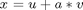
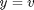
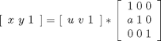
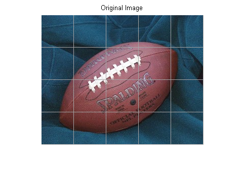
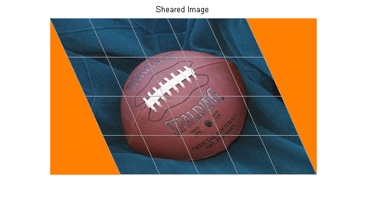
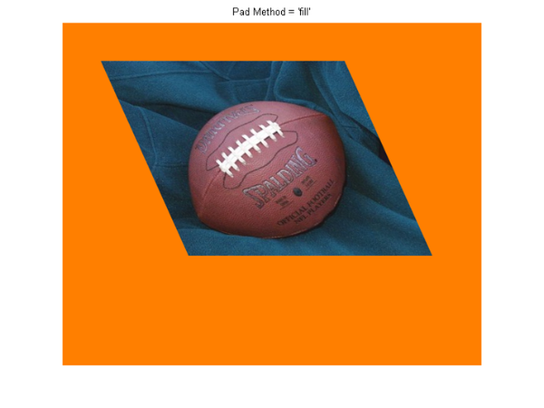
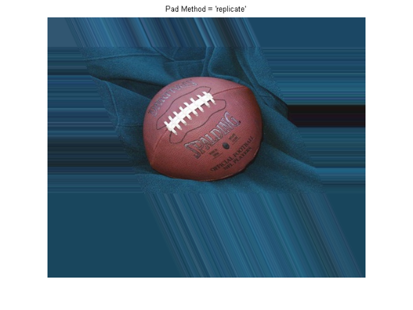
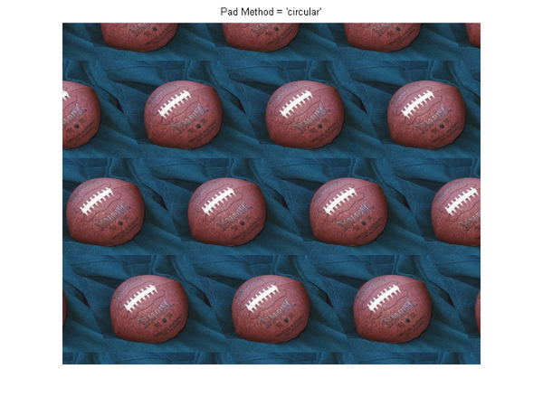
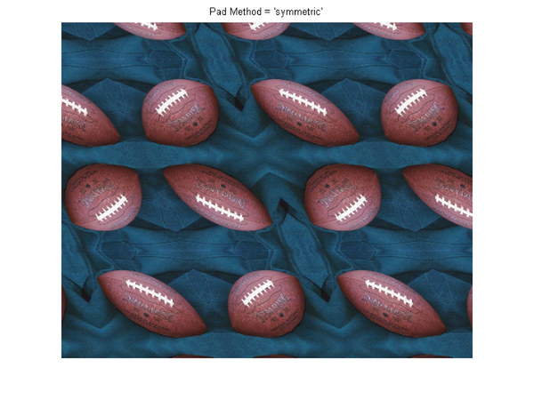

Padding and Shearing an Image Simultaneously
In this demonstration, we construct a tform struct that represents a simple shear transformation, then apply it to an image. We explore how the transformation affects straight lines and circles, and then use it as a vehicle to explore the various options for image padding that can be used with imtransform and tformarray.
Contents
Step 1: Transform an Image Using Simple Shear
In two dimensions, a simple shear transformation that maps a pair of input coordinates [u v] to a pair of output coordinates [x y] has the form


where a is a constant.
Any simple shear is a special case of an affine transformation. You can easily verify that

yields the values for x and y that you received from the first two equations.
Setting a = 0.45, we construct an affine tform struct using maketform.
a = 0.45;
T = maketform('affine', [1 0 0; a 1 0; 0 0 1] );
We select, read, and view and image to transform.
A = imread('football.jpg'); h1 = figure; imshow(A); title('Original Image');
We choose a shade of orange as our fill value.
orange = [255 127 0]';
We are ready to use T to transform A. We could call imtransform as follows:
B = imtransform(A,T,'cubic','FillValues',orange);
but this is wasteful since we would apply cubic interpolation along both columns and rows. (With our pure shear transform, we really only need to interpolate along each row.) Instead, we create and use a resampler that applies cubic interpolation along the rows but simply uses nearest neighbor interpolation along the columns, then call imtransform and display the result.
R = makeresampler({'cubic','nearest'},'fill');
B = imtransform(A,T,R,'FillValues',orange);
h2 = figure; imshow(B);
title('Sheared Image');
Step 2: Explore the Transformation
Transforming a grid of straight lines or an array of circles with tformfwd is a good way to understand a transformation (as long as it has both forward and inverse functions).
Define a grid of lines covering the original image, and display it over the image Then use tformfwd to apply the pure shear to each line in the grid, and display the result over the sheared image.
[U,V] = meshgrid(0:64:320,0:64:256); [X,Y] = tformfwd(T,U,V); gray = 0.65 * [1 1 1]; figure(h1); hold on; line(U, V, 'Color',gray); line(U',V','Color',gray); figure(h2); hold on; line(X, Y, 'Color',gray); line(X',Y','Color',gray); 
You can do the same thing with an array of circles.
gray = 0.65 * [1 1 1]; for u = 0:64:320 for v = 0:64:256 theta = (0 : 32)' * (2 * pi / 32); uc = u + 20*cos(theta); vc = v + 20*sin(theta); [xc,yc] = tformfwd(T,uc,vc); figure(h1); line(uc,vc,'Color',gray); figure(h2); line(xc,yc,'Color',gray); end end
Step 3: Compare the 'fill', 'replicate', and 'bound' Pad Methods
When we applied the shear transformation, imtransform filled in the orange triangles to the left and right, where there was no data. That's because we specified a pad method of 'fill' when calling makeresampler. There are a total of five different pad method choices ('fill', 'replicate', 'bound', 'circular', and 'symmetric'). Here we compare the first three.
First, to get a better look at how the 'fill' option worked, use the 'XData' and 'YData' options in imtransform to force some additional space around the output image.
R = makeresampler({'cubic','nearest'},'fill');
Bf = imtransform(A,T,R,'XData',[-49 500],'YData',[-49 400],...
'FillValues',orange);
figure, imshow(Bf);
title('Pad Method = ''fill''');
 Now, try the 'replicate' method (no need to specify fill values in this case).
R = makeresampler({'cubic','nearest'},'replicate');
Br = imtransform(A,T,R,'XData',[-49 500],'YData', [-49 400]);
figure, imshow(Br);
title('Pad Method = ''replicate''');
 And try the 'bound' method.
R = makeresampler({'cubic','nearest'}, 'bound');
Bb = imtransform(A,T,R,'XData',[-49 500],'YData',[-49 400],...
'FillValues',orange);
figure, imshow(Bb);
title('Pad Method = ''bound''');
Results with 'fill' and 'bound' look very similar, but look closely and you'll see that the edges are smoother with 'fill'. That's because the input image is padded with the fill values, then the cubic interpolation is applied across the edge, mixing fill and image values. In contrast, 'bound' recognizes a strict boundary between the inside and outside of the input image. Points falling outside are filled. Points falling inside are interpolated, using replication when they're near the edge. A close up look helps show this more clearly. We choose XData and YData to bracket a point near the lower right corner of the image, in the output image space, the resize with 'nearest' to preserve the appearance of the individual pixels.
R = makeresampler({'cubic','nearest'},'fill');
Cf = imtransform(A,T,R,'XData',[423 439],'YData',[245 260],...
'FillValues',orange);
R = makeresampler({'cubic','nearest'},'bound');
Cb = imtransform(A,T,R,'XData',[423 439],'YData',[245 260],...
'FillValues',orange);
Cf = imresize(Cf,12,'nearest');
Cb = imresize(Cb,12,'nearest');
figure;
subplot(1,2,1); imshow(Cf); title('Pad Method = ''fill''');
subplot(1,2,2); imshow(Cb); title('Pad Method = ''bound''');

Step 4: Exercise the 'circular' and 'symmetric' Pad Methods
The remaining two pad methods are 'circular' (circular repetition in each dimension) and 'symmetric' (circular repetition of the image with an appended mirror image). To show more of the pattern that emerges, we redefine the transformation to cut the scale in half.
Thalf = maketform('affine',[1 0; a 1; 0 0]/2); R = makeresampler({'cubic','nearest'},'circular'); Bc = imtransform(A,Thalf,R,'XData',[-49 500],'YData',[-49 400],... 'FillValues',orange); figure, imshow(Bc); title('Pad Method = ''circular''');
R = makeresampler({'cubic','nearest'},'symmetric');
Bs = imtransform(A,Thalf,R,'XData',[-49 500],'YData',[-49 400],...
'FillValues',orange);
figure, imshow(Bs);
title('Pad Method = ''symmetric''');
